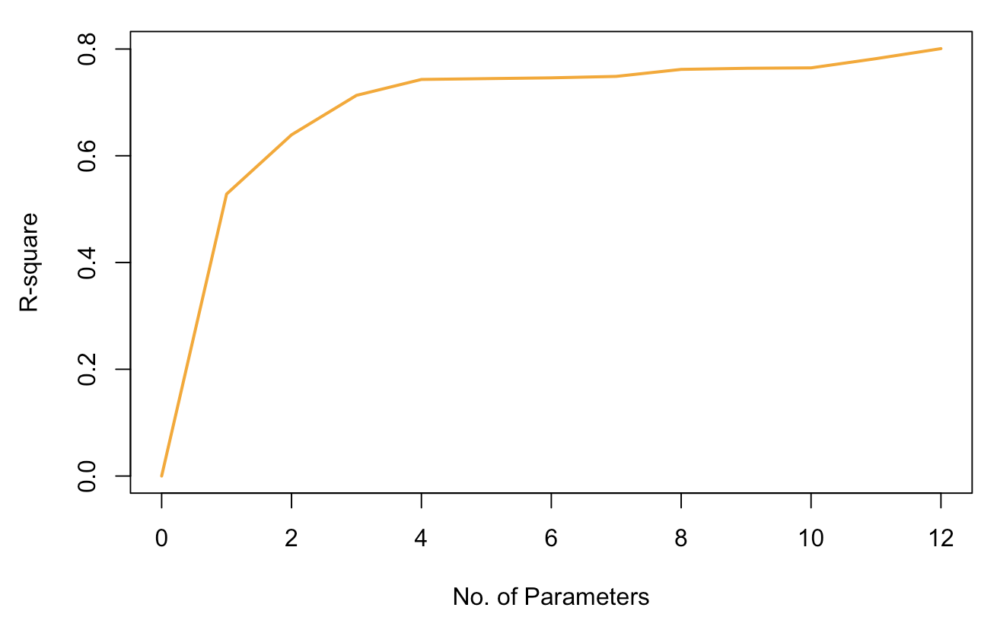
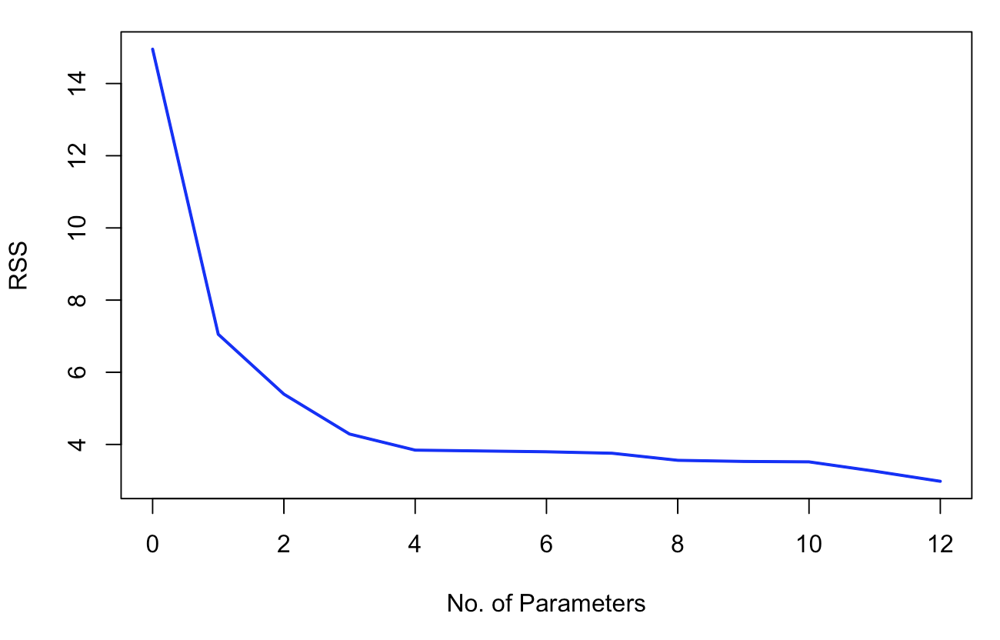

2.4 Goodness-Of-Fit: \(R\)-Square
A measure of how well the model fits the data is the \(R\)-square (also called coefficient of determination or the percentage of variance explained). It is defined as
\[\begin{align*} R^2 &= \frac{\sum_i (\hat{y}_i - \bar{y})^2}{\sum_i (y_i - \bar{y})^2}\quad = \frac{\text{distance of model from grand mean}}{\text{distance of observations from grand mean }}\\ & = \frac{||\hat{\mathbf{y}} - \bar{\mathbf{y}}||^2}{||\mathbf{y} - \bar{\mathbf{y}}||^2} \\ &= \frac{||\mathbf{y} - \bar{\mathbf{y}}||^2 - ||\hat{\mathbf{y}} - \mathbf{y}||^2 }{||\mathbf{y} - \bar{\mathbf{y}}||^2} \\ &= 1 - \frac{||\hat{\mathbf{y}} - \mathbf{y}||^2 }{||\mathbf{y} - \bar{\mathbf{y}}||^2}\, := 1 - \frac{RSS}{TSS} \end{align*}\] The second-to-last equality follows from the orthogonal decomposition \[\underbrace{||\mathbf{y} - \bar{\mathbf{y}}||^2}_{\substack{\text{ total}\\\text{ variation }}} = \underbrace{||\hat{\mathbf{y}} - \bar{\mathbf{y}}||^2}_{\substack{\text{ model variation }\\ \text{ from mean }}} + \underbrace{|| \hat{\mathbf{y}} - \mathbf{y}||^2}_{\text{ error }}\]
Properties of \(R^2\)
\(0\leq R^2 \leq 1\)
\(R^2\) is invariant of any location or scale change of \(Y\) or of the predictors \(X\).
\(R^2\) alone does not tell us much about the quality of the LS fit.
A small \(R^2\) does not necessarily imply that the LS model is poor.
Adding a new predictor, even if it is randomly generated and completely unrelated to \(Y\), decreases the \(RSS\) and therefore increases \(R^2\).
These relationships are illustrated in the two plots below:

